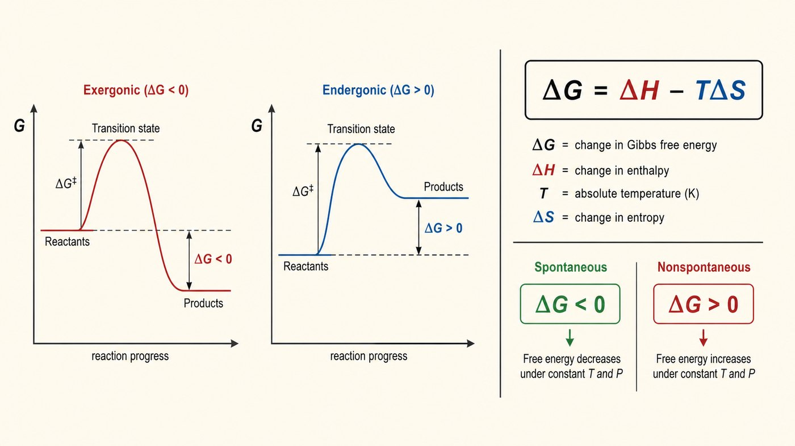
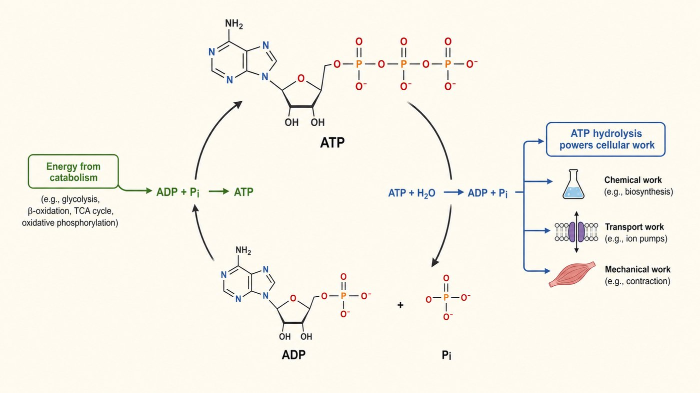

第 12 週
生物能量學
ΔG 與 ATP
Năng lượng sinh học
Trả nợ tuần 6
當時 ΔG 還沒教。今天正式登場。
Lúc đó chưa học ΔG. Hôm nay chính thức.
Từ vựng · 不用背,看過就好
| 中文 | Tiếng Việt | English | 中文 | Tiếng Việt | English |
|---|---|---|---|---|---|
| 自由能 | Năng lượng tự do | Free energy | 水解 | Sự thủy phân | Hydrolysis |
| ΔG | Biến thiên NL tự do | ΔG | 氧化 | Sự oxy hóa | Oxidation |
| 放能反應 | Phản ứng tỏa năng | Exergonic | 還原 | Sự khử | Reduction |
| 吸能反應 | Phản ứng thu năng | Endergonic | 異化作用 | Dị hóa | Catabolism |
| 能量耦合 | Sự ghép cặp NL | Coupling | 同化作用 | Đồng hóa | Anabolism |
異化 dị hóa(拆)、同化 đồng hóa(合)。dị / đồng 剛好相反,好記。
Tự phát hay không

放能 ΔG < 0:球從山上滾下來。自發。 | 吸能 ΔG > 0:球要滾上山。不自發。
Phân biệt quan trọng nhất
「會不會」發生。
ΔG: CÓ xảy ra không
「多快」。
Năng lượng hoạt hóa: NHANH bao nhiêu
ATP: đồng tiền năng lượng

ATP → ADP + Pi:放能。細胞用它做事。 | ADP + Pi → ATP:吸能。從食物充電。
Hiểu lầm: liên kết cao năng
那個「穩定度的差」,就是放出來的能量。
Sự ghép cặp năng lượng
| 情況 | ΔG | 會發生嗎 |
|---|---|---|
| 反應 A 單獨 | +3 | 不會 |
| ATP 水解單獨 | −7 | 會 |
| 綁在一起 | −4 | 會! |
細胞怎麼做「不自發」的事?綁一個放能反應。
放能的付錢,吸能的搭便車。整個生化都這樣運作。
Oxy hóa khử
失去電子。
Mất electron
得到電子。
Nhận electron
那些電子最後送到第 15 週的電子傳遞鏈發電。
Dị hóa vs đồng hóa
| 異化 Dị hóa | 同化 Đồng hóa | |
|---|---|---|
| 做什麼 | 拆解大分子 | 合成大分子 |
| 能量 | 放能(產 ATP) | 吸能(耗 ATP) |
| 例子 | 糖解(第 13 週) | 做肝醣、做蛋白質 |
dị = 分開,đồng = 一起。越南語剛好相反,好記。
Bài tập: Xác định
自發嗎? Tự phát không?
ΔG = −20 kJ/mol
ΔG = +15 kJ/mol
ΔG = 0
Bài tập: Đúng hay sai
ΔG < 0 的反應一定跑得很快。
能量存在 ATP 的磷酸鍵「裡面」。
氧化是失去電子。
異化作用會產生 ATP。
想一想:酵素能不能把 ΔG > 0 的反應變成自發?
下週 · Tuần sau
糖解作用
Đường phân (Glycolysis)
▶
課前:看詞彙表第 13 週(15 個詞)
Xem trước 15 từ của tuần 13
▶
小測:下週前 10 分鐘,考今天的詞
Kiểm tra 5 câu
▶
提示:今天的耦合、氧化還原、ATP,下週全部一起用
Gợi ý: tuần sau dùng hết